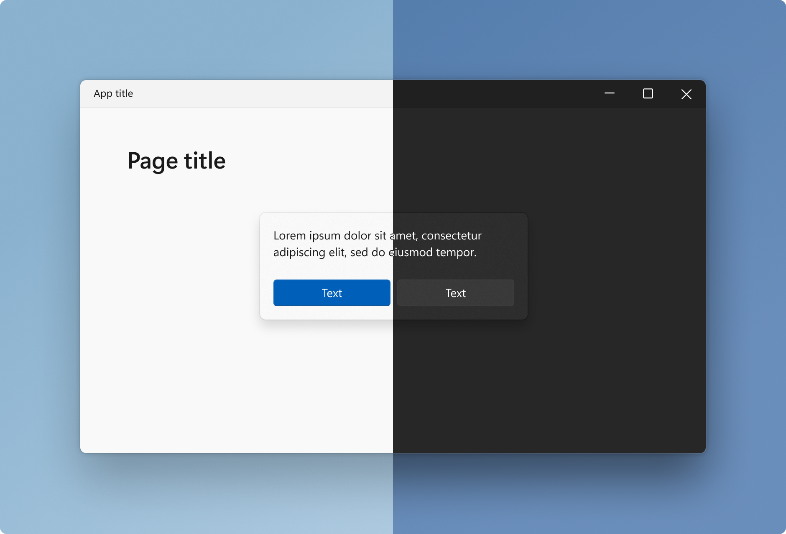
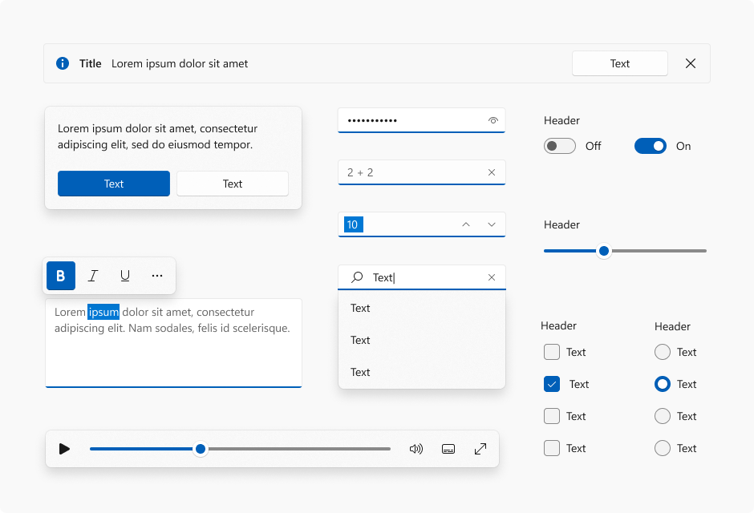
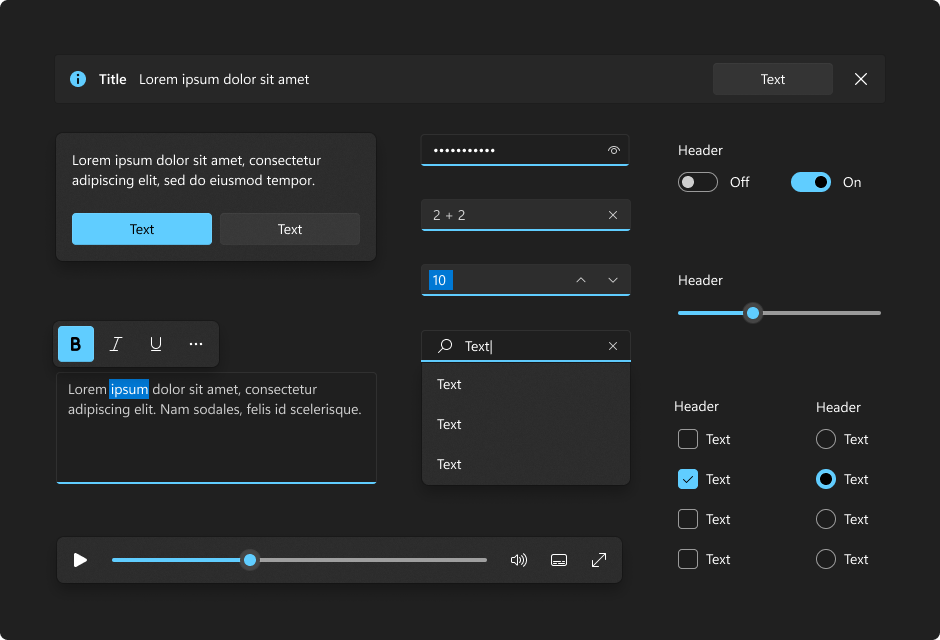

Motion in Windows 11 - Windows apps
An overview of where and how motion is used in Windows 11
This browser is no longer supported.
Upgrade to Microsoft Edge to take advantage of the latest features, security updates, and technical support.
Windows 11 employs color to help users focus on their tasks by indicating a visual hierarchy and structure between user interface elements. Color is context appropriate and used to provide a calming foundation, subtly enhancing user interactions and emphasizing significant items only when necessary.

Windows 11 supports two color modes: light and dark. Each mode consists of a set of neutral color values that are automatically adjusted to ensure optimal contrast.
In both light and dark color modes, darker colors indicate background surfaces of less importance. Important surfaces are highlighted with lighter and brighter colors. See layering & elevation for more information.


Accent color is used to emphasize important elements in the user interface and to indicate the state of an interactive object or control. Accent color values are generated automatically and optimized for contrast in both light and dark modes. Accent colors are used sparingly to highlight important elements and convey information about an interactive element's state.
Tip
The WinUI 3 Gallery app includes interactive examples of most WinUI 3 controls, features, and functionality. Get the app from the Microsoft Store or get the source code on GitHub
An overview of where and how motion is used in Windows 11
An overview of geometry and spacing in Windows 11
The distinguishing visual elements in Windows 11
How materials and surfaces are arranged to create depth and hierarchy in Windows 11
Submit and view feedback for